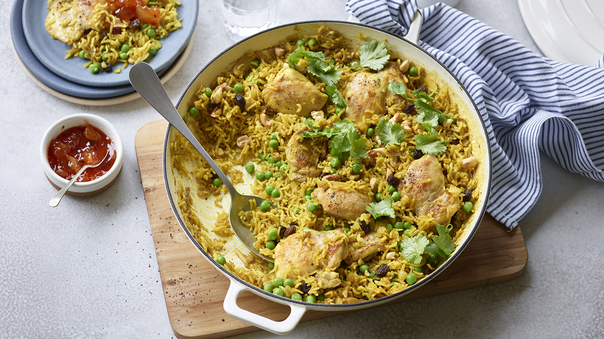

Chicken Pilau

Easy Home Made Chicken Pilau
Chicken thighs are perfect for this chicken pilau as they are low cost and suited to lower, slower cooking techniques. If you’d rather use chicken breasts, just fry the pieces briefly until sealed but not browned to avoid the chicken being overcooked at the end.
Without the optional toppings, each serving provides 762 kcal, 38g protein, 88g carbohydrates (of which 20g sugars), 26g fat (of which 9g saturates), 10g fibre and 1.2g salt.
Ingredients
- 3 tbsp olive oil or vegetable oil
- 6 chicken thigh fillets, skin removed, cut into 3 to 4 pieces
- 2 onions, finely diced
- 2 garlic cloves, thinly sliced
- 3 tbsp mild curry powder
- 2 tsp turmeric
- 200g/7oz white basmati rice
- 1 x 400ml/14fl oz tin light coconut milk
- 1 chicken or vegetable stock cube
- 75g/2¾oz sultanas or raisins
- 275g/9¾oz frozen peas, defrosted at room temperature
- salt
- 50g/1¾oz cashews, lightly crushed, to garnish (optional)
- handful coriander leaves, to garnish (optional)
- mango chutney, to serve (optional)
- plain yoghurt, to serve (optional)
Steps
- Preheat the oven to 180C/160C Fan/Gas 4.
- Heat the oil in a large, shallow, ovenproof pan or casserole. Add the chicken pieces and fry over a high heat for 5 minutes until browning.
- Use a slotted spoon to lift the chicken onto a plate, then add the onions with a pinch of salt and fry for 5 minutes until starting to soften. Stir in the garlic and spices for another minute.
- Stir in the rice, followed by the coconut milk and 200ml/7fl oz water. Crumble in the stock cube and bring the liquid to a simmer. Scatter the chicken pieces back in the pan, drizzle over any juices left on the plate and then scatter over the sultanas.
- Top with a lid or scrunch two sheets of kitchen foil tightly over the top. Bake on the middle shelf in the oven for 38–40 minutes until the rice and chicken pieces are tender and the stock is absorbed.
- Stir the peas through the pilau, cover again with the lid and leave to heat through for 5 minutes. Scoop the pilau onto plates, topping with cashews and coriander leaves, if using. Serve with dollops of chutney and/or yoghurt.